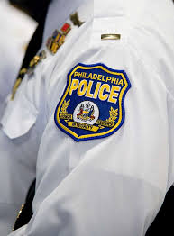
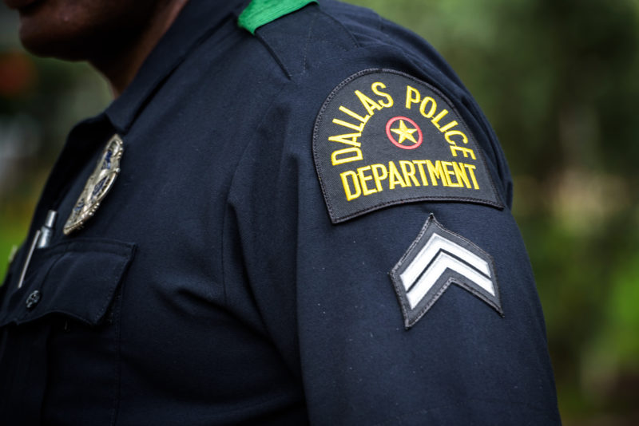
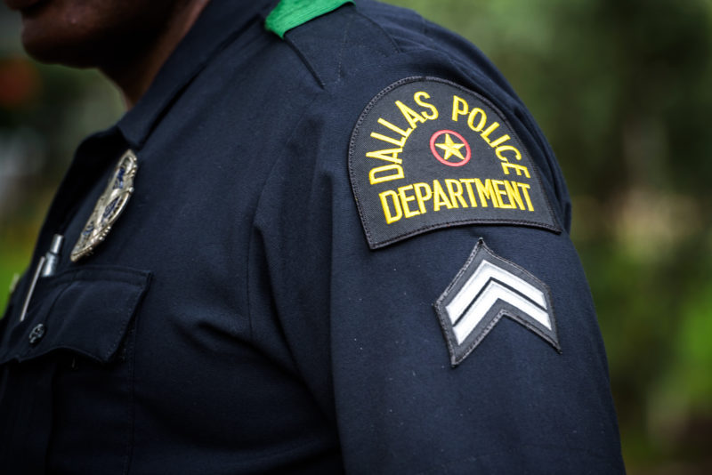

For any additional information, please contact: police.comissioner@phila.gov or call the PPD Media Relations Department at 215-686-3388
The Secret to the Salary Increase

"It’s not just our police department struggling…it’s a city-wide law enforcement struggle,” said Philadelphia Police Department (PPD) media relations representative Jasmine Colon-Reilly this past Tuesday (December 3rd, 2025). In a recent finding from a public data set, sourced from Open Data Philly, it was found that Philadelphia police officers now make nearly $80,000 per year, a sharp contrast to the $23,000 they made back in 2019. The number continues to jump dramatically by the year, despite officers losing over 1,000 members of their police force in just the past six years as well as the lack of officer staffing the city finds themselves dealing with.
According to Colon-Reilly, she said the leading cause for this jump in salary comes down to overtime, with officers from other sectors of city departments having to get called in when they are off duty. “When there’s a vacancy, there has to be a filler, and so we have to pull officers”.
The Missing Information
Unfortunately, this does happen to be an aspect to the dataset that has not exactly been updated to its fullest potential as of the last quarter of this year. On top of that, there’s very limited information about benefits, how much overtime, or any information about pensions or bonuses. Colon-Reilly did confirm there is a 3% salary increase every year for officers as well as a $3,000 bonus, from a bill that was passed in August of this past summer; however, it does not explain how their annual income has almost quadrupled in less than a decade.
The Reasons Behind the Lack of Retention
When asking Reilly about why Philadelphia law enforcement is experiencing such a loss of officers, she provided a variety of reasons. Depending on the generation, how an individual views the idea of working in the industiry will be different and it plays a critical factor. “When there’s less officers, there’s an officer safety issue. If you're asking current policemen to work 12-18 hrs a day, you are going to run into burnout. There’s a mental and physical aspect you have to take into account,” said Reilly during the call Tuesday afternoon.
Coming from someone who has worked in the field, spectating for over two decades, the shift in mentally has been shocking for her. “30 years ago, people weren’t as concerned about the specifics of policing. They cared more about just putting bread on the table and they were happy. Now, younger generations are focused way more on fulfillment, and a lot of times, they don’t seem to find that in law enforcement".
However, ever since the pandemic, national officer shortages have been a consistent pattern among major cities here in America. Looking at the bigger picture, the Department of Justice provides documentation, showing the reasons for why younger generations are choosing to stray away from the profession. Although a strong factor is the fact that other jobs outside law enforcement pay much more substantially, other factors include lack of benefits such as 401k or social security that other jobs may offer, it is very physically demanding, and the process itself of fully becoming an officer can be “complex” or "difficult".
On A More National Note
Especially in America…The
Federal Bureau of Investigation
is finding that more officers are leaving their departments. In a recent survey, as of 2023, the FBI released a study finding that three patterns are being consistently found among officer. They have found that less individuals are applying for positions or leaving their position, while current officers are getting ready to retire (nearly a quarter of their team), putting nation-wide security in a seriously tight position. "While the study is worthy of every chief’s attention, research on talent retention in business and industry demonstrates clearly that much turnover is due to poor leadership," said Steve Gladis, former FBI Agent,"People leave managers, not jobs".
 

What the FBI says are the biggest contributors to the national loss of officers:
- Negative Press and Limited Respect of Officers
- Racial Issues
- Increase in national hate crimes (has doubled since 2015)
- Movements to defund the police
Who's this affecting the most? The Locals
However, city law enforcement employees are not the only individuals affected by this. Arguably, it's the Philadelphia city residents that are the ones who feel the impact the moment. Ironically, the shortage has not made crime in the Philadelphia area any harder to manage, said Reilly; however, residents often complain about how long it takes to have officers respond to a specific emergency or incident.
“You have to think about it almost as if it’s an ER. If someone comes in complaining about a headache and is waiting to get treated, while someone comes in later with their head bleeding from a bullet wound, the person who came in later is going to get taken care of first simply because it is a life-threatening situation”.
She compares this situation to one they typically face. She provided an example of a call the police department had received last week involving someone complaining about a driveway blockage, while someone else was actively calling to address a fire situation taking place in the same district.
When asked about what she wishes more city residents knew, she said the following: “98% of police work is mundane, and 2% is really the scary, crime-related cop work people think of when they see someone in an officer uniform. The sooner people realize that, the sooner the officer burnout will come to an end and employment numbers will change back to normal”.
In terms of the future, the police force is doing their best to advocate to local high schools and colleges to peak interest said Colon-Reilly. Through having cops visit local community colleges and giving inspirational talks at secondary schools in the Greater Philadelphia region, the Philadelphia Police force is working harder now than ever to build up their team. The department requested $350,000 from the city council in April of 2025 in order to encourage new recruitment efforts to cast a wider net. Besides this, the city has also reinvented the hiring standards, lowering the physical fitness test standards and allowing potential candidates retake reading exams if needed. Using billboards and social media, the team is doing as much as they can to reach as wide of an audience as possible, while trying to change the mind of the younger generation. Through these impacts, the team is hoping to hire 500 officers this upcoming 2026 season, but time will tell whether the force succeeds in their attempts to begin to reverse the employment trends they have been seeing these past five years.